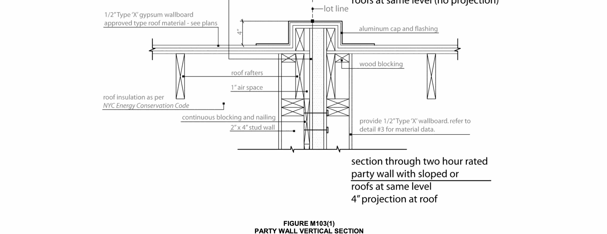

The provisions of this appendix contain supplementary requirements for the design and construction of one- and two-family dwellings not more than three stories in height.
The following words and terms shall, for the purposes of this appendix and as used elsewhere in this code, have the meanings shown herein.
DWELLING, ONE-FAMILY. Any building or structure designed and occupied exclusively for residence purposes on a long-term basis for more than a month at a time by not more than one family. One-family dwellings shall also be deemed to include a dwelling located in a series of one-family dwellings each of which faces or is accessible to a legal street or public thoroughfare, provided that each such dwelling unit is equipped as a separate dwelling unit with all essential services, and also provided that each such unit is arranged so that it may be approved as a legal one-family dwelling.
DWELLING, TWO-FAMILY. Any building or structure designed and occupied exclusively for residence purposes on a long-term basis for more than a month at a time by not more than two families. Two-family dwellings shall also be deemed to include a dwelling located in a series of two-family dwellings each of which faces or is accessible to a legal street or public thoroughfare, provided that each such dwelling is equipped as a separate dwelling with all essential services, and also provided that each such dwelling is arranged so that it may be approved as a legal two-family dwelling.
A fire wall shall be provided between buildings in accordance with Chapter 7 of this code. However, multiple one-and two-family dwellings of construction Type IIIA, IIIB, VA and VB where permitted, not more than three stories in height, and not more than 2,100 square feet (195 m2) on a story may be separated by party walls constructed in accordance with the following and as illustrated in Figures M103(1) and M103(2):
1. Such wall shall consist of a solid 1-inch (25 mm) Type X gypsum wall board core covered on each side by ½-inch (12.7 mm) moisture-resistant Type X gypsum wall board, followed by a 1-inch (25 mm) air gap on one side. Such assembly shall be constructed between two independently supported load-bearing stud walls. See Figure M103.1.
2. Such wall shall be continuous between foundations and roofs.
3. When roof construction on the same level is combustible on both sides of the party wall, the party wall shall extend through the roof construction to a height of at least 4 inches (102 mm) above the high point of the roof framing unless a minimum of 18 inches (457 mm) of non-combustible roof construction is provided on each side of the party wall.
4. Such party wall shall be made smoke tight at junctions with exterior walls. In buildings in construction Type VA and VB, exterior walls shall be constructed of noncombustible materials for a distance of at least 18 inches (457 mm) on each side of the party wall, or the party wall shall project at least 12 inches (305 mm) through the exterior wall.
